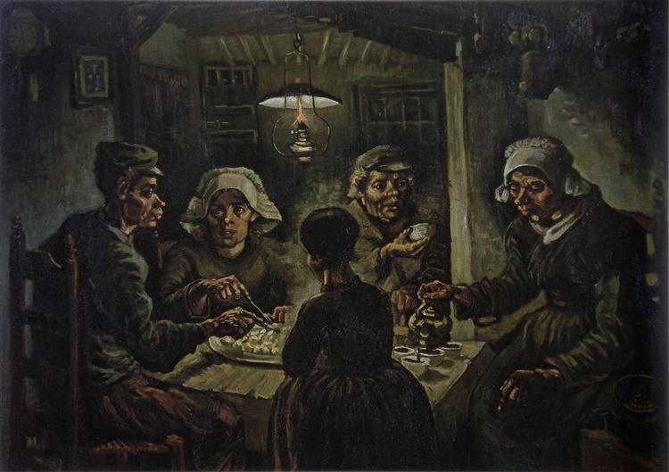

Vincent van Gogh

Vincent Willem van Gogh was a Dutch Post-Impressionist painter who is among the most famous and influential figures in the history of Western art. In just over a decade, he created approximately 2100 artworks, including around 860 oil paintings, most of them in the last two years of his life.
Read moreTop of his artworks
1. The Starry Night

2. The Potato Eaters
